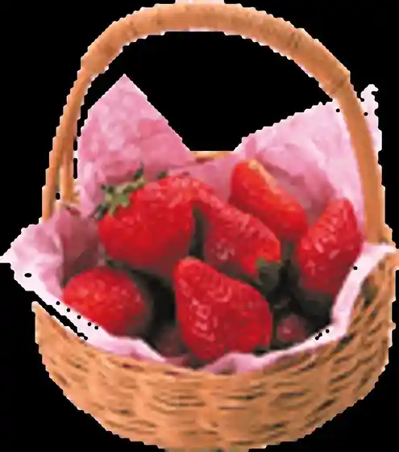
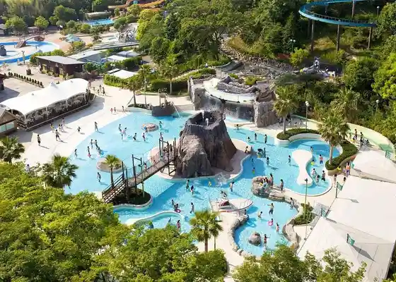
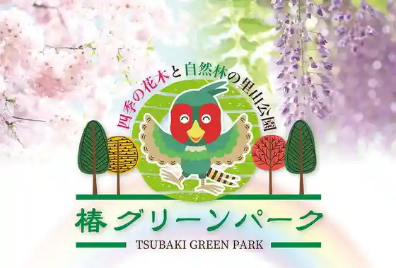
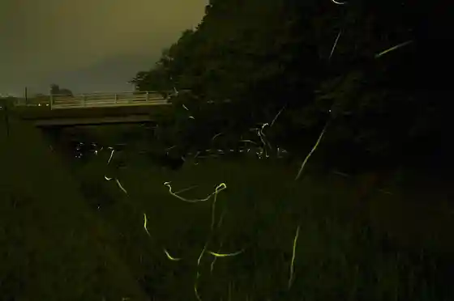

Kokudo 23 Gosen Chikaku !! Torikkusuichigo Farm
Suzuka, Mie · 059-381-5515 · Official / source link

Suzuka Sakitto Park Akua Adobencha
Suzuka, Mie · 059-378-1111 · Official / source link

Shiki no Kaboku to Shizen Hayashi no Satoyama Park (Tsubaki Green Park)
Suzuka, Mie · Official / source link

Hotaru Village
Suzuka, Mie · Official / source link

Takamiya Museum
Suzuka, Mie · 059-378-0951 · Official / source link
Sakura no Mori Park
Suzuka, Mie · 080-1618-4341 · Official / source link
Suzuka Kai Town no Na no Hana
Suzuka, Mie · Official / source link
Kenkyu Saibai Farm Suzuka Forest Garden (Akatsuka Botanical Garden)
Suzuka, Mie · 059-371-1777 · Official / source link
Tsubaki Dai Shrine
Suzuka, Mie · 059-371-1515 · Official / source link
Suzuka Sakitto
Suzuka, Mie · 059-378-1111 · Official / source link
Daiseforesuto Park (Suzuka Seishonen Forest)
Suzuka, Mie · 059-378-2946 · Official / source link
Asano Ya Mamoru Kinen Ie
Suzuka, Mie · 059-382-6722 · Official / source link
Furuki Dogu no Kan Seikatsukobo Kamedaya
Suzuka, Mie · 059-382-0221 · Official / source link
O Hanashi to Natsukashi Kami Shibai no O Tera
Suzuka, Mie · 059-383-6834 · Official / source link
Furiigyararii
Suzuka, Mie · 059-374-0363 · Official / source link
Garakuta Hyotan Workshop
Suzuka, Mie · 059-374-1006 · Official / source link
Hotoke Sho So Main Shop Butsudan Workshop
Suzuka, Mie · 059-382-0472 · Official / source link
Katara I Kan Yokota
Suzuka, Mie · 059-386-0033 · Official / source link
Uesutoreshingukazu
Suzuka, Mie · 059-379-0939 · Official / source link
Shinobi Sha Na Ka " Ta
Suzuka, Mie · 090-6763-0709 · Official / source link
Yakan Nimoichigo Kari Okadaichigo Sono
Suzuka, Mie · 080-4228-0154 · Official / source link
Seiryu Ichigo Sono
Suzuka, Mie · 059-389-7887 · Official / source link
Takaokafamu
Suzuka, Mie · 080-2652-5400 · Official / source link
Kosei Tera Daruma Tera
Suzuka, Mie · 059-374-2796 · Official / source link
Ishigaki Ike Park
Suzuka, Mie · 059-383-9010 · Official / source link
Suzuka Dento Sangyo Hall (Ise Katagami Taiken Hori)
Suzuka, Mie · 059-386-7511 · Official / source link
Kachi Soku Nichi Shrine
Suzuka, Mie · Official / source link
Chiyozaki Coast
Suzuka, Mie · 059-382-9020 · Official / source link
Fu Nanji no Ainashi
Suzuka, Mie · 059-382-9020 · Official / source link
Fu Nanji
Suzuka, Mie · 059-378-0539 · Official / source link
Shin Fuku Tera
Suzuka, Mie · 059-382-0263 · Official / source link
Misuzu Kantorii Kurabu
Suzuka, Mie · 059-371-1551 · Official / source link
Shutcho Babekyu Manpuku Mie
Suzuka, Mie · 059-388-1127 · Official / source link
Kurafutoarumajiro
Suzuka, Mie · 059-370-6607 · Official / source link
Suzuka Tourism Association
Suzuka, Mie · 059-380-5595 · Official / source link
Nyudogagaku
Suzuka, Mie · Official / source link
Suzu Mine Gorufu Kurabu
Suzuka, Mie · 059-371-0711 · Official / source link
Sho Shi Su Gorge
Suzuka, Mie · 059-380-5595 · Official / source link
Sho Shi Su no Byobu Iwa
Suzuka, Mie · 059-380-5595 · Official / source link
Torin Tera
Suzuka, Mie · 059-380-5595 · Official / source link
Kobe Castle Ruins
Suzuka, Mie · 059-382-9031 · Official / source link
Sugawara Shrine
Suzuka, Mie · Official / source link
Umi no Mieru Kishi Okayama Ryokuchi
Suzuka, Mie · Official / source link
Suzuka Kawa Kasen Ryokuchi
Suzuka, Mie · 059-370-8099 · Official / source link
Suzuka Furawa Park
Suzuka, Mie · 059-367-3455 · Official / source link
Ozawa (Honjin) Museum
Suzuka, Mie · 059-374-1182 · Official / source link
Suzuka Koko Museum
Suzuka, Mie · 059-374-1994 · Official / source link
Chota no Ogusu
Suzuka, Mie · 059-382-9020 · Official / source link
Ryuko Tera
Suzuka, Mie · 059-382-1189 · Official / source link
Kawamata Shrine no Sudajii
Suzuka, Mie · 059-382-9020 · Official / source link
Kaikoku Shoko no Hi
Suzuka, Mie · 059-382-9031 · Official / source link
Maekawa Tei Goro Shiryoshitsu
Suzuka, Mie · 059-382-9031 · Official / source link
Ishi Daijin
Suzuka, Mie · 059-371-1515 · Official / source link
Sakai Shrine
Suzuka, Mie · Official / source link
Hakucho Tsuka Burial Mound
Suzuka, Mie · 059-378-0951 · Official / source link
Ozuka Burial Mound
Suzuka, Mie · 059-382-9031 · Official / source link
Ejima Wakamiya Hachiman Shrine
Suzuka, Mie · Official / source link
Ise Ko Ato (Choja Yashiki Iseki)
Suzuka, Mie · 059-382-9031 · Official / source link
Houn Tera
Suzuka, Mie · Official / source link
Taishi Tera
Suzuka, Mie · Official / source link
Suzuka Dento Sangyo Hall
Suzuka, Mie · 059-386-7511 · Official / source link
Daikokuya Kodayu Memorial Museum
Suzuka, Mie · 059-385-3797 · Official / source link
Sasaki Nobutsuna Memorial Museum
Suzuka, Mie · 059-374-3140 · Official / source link
Suzuka Sumi Susumu Makoto Do
Suzuka, Mie · 059-388-4053 · Official / source link
Gangyo Tera
Suzuka, Mie · 059-382-3608 · Official / source link
Seiho Tera
Suzuka, Mie · 059-386-0921 · Official / source link
Miya Yubi Michi Gaku
Suzuka, Mie · 059-371-0029 · Official / source link
Ishiyakushi no Ichiri Tsuka Ato
Suzuka, Mie · 059-382-9020 · Official / source link
Suzuka Yakusho 15 Kai Tembo Robii
Suzuka, Mie · 059-382-9009 · Official / source link
Sasaki Nobutsuna Memorial Museum
Suzuka, Mie · 059-374-3140 · Official / source link
Tsuzumigaura Coast
Suzuka, Mie · 059-382-9020 · Official / source link
Suzuka Supotsu Garden Puru
Suzuka, Mie · 059-372-2250 · Official / source link
Senshu Tera Kobe Betsuin
Suzuka, Mie · 059-382-2141 · Official / source link
Koyasu Kan'onji
Suzuka, Mie · 059-386-0046 · Official / source link
Nishi no Kido no Hiiragi
Suzuka, Mie · 059-382-9020 · Official / source link
Shirako Fudan Sakura
Suzuka, Mie · 059-382-9020 · Official / source link
Nyudo Gaku Inutsuge Oyobi Asebi Gunraku
Suzuka, Mie · 059-382-9020 · Official / source link
Kinshosui Shotaku Shokubutsu Gunraku
Suzuka, Mie · 059-382-9020 · Official / source link
Jizo Dai Matsu
Suzuka, Mie · 059-382-9020 · Official / source link
Ishiyakushi no Kama Sakura
Suzuka, Mie · 059-382-9020 · Official / source link
Suzuka Supotsu Garden Tenisukoto
Suzuka, Mie · 059-372-2250 · Official / source link
Chunichi Kantorii Club
Suzuka, Mie · 059-371-1188 · Official / source link
Nyonin Teibo Hi
Suzuka, Mie · Official / source link
Experience Gakushu Ise Katagami Museum
Suzuka, Mie · 059-368-0240 · Official / source link
Kira Nikichi no Hi
Suzuka, Mie · 059-382-9020 · Official / source link
Ishiyakushi Tera
Suzuka, Mie · 059-374-0394 · Official / source link
Daikokuya Kodayu Memorial Museum
Suzuka, Mie · 059-385-3797 · Official / source link
Ise Katagami Museum
Suzuka, Mie · 059-368-0240 · Official / source link
Kojin Yama Kan'onji
Suzuka, Mie · 059-379-0331 · Official / source link
Shono Yado Museum
Suzuka, Mie · 059-370-2555 · Official / source link
Kasa to Shrine
Suzuka, Mie · 059-378-0951 · Official / source link